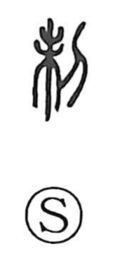

制

Kun: | On: sei
system ・ regulation ・ control ・ restriction ・ to suppress ・ to make
Explanation
制 combines 未, a tree with luxuriant branches, with 刀, a blade. The branches are cut back and brought into a controlled shape. Pruning restrains excess growth and gives the tree a defined form.
From this shaping work, 制 comes to mean determining, regulating, or establishing an order. A rule sets bounds as the cutting does; a system gives the whole an intended arrangement. Restraining, stopping, and bringing something under control belong to the same development.
Applied to cloth, the cutting and making are written 製. The two words remain closely connected, and 制 can also be used for making or producing. Its original material is the tree being trimmed into shape.